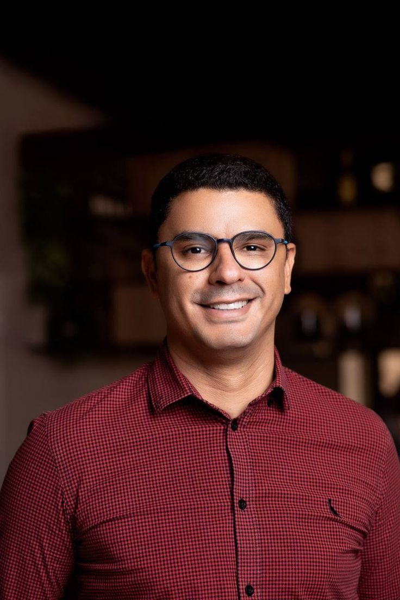
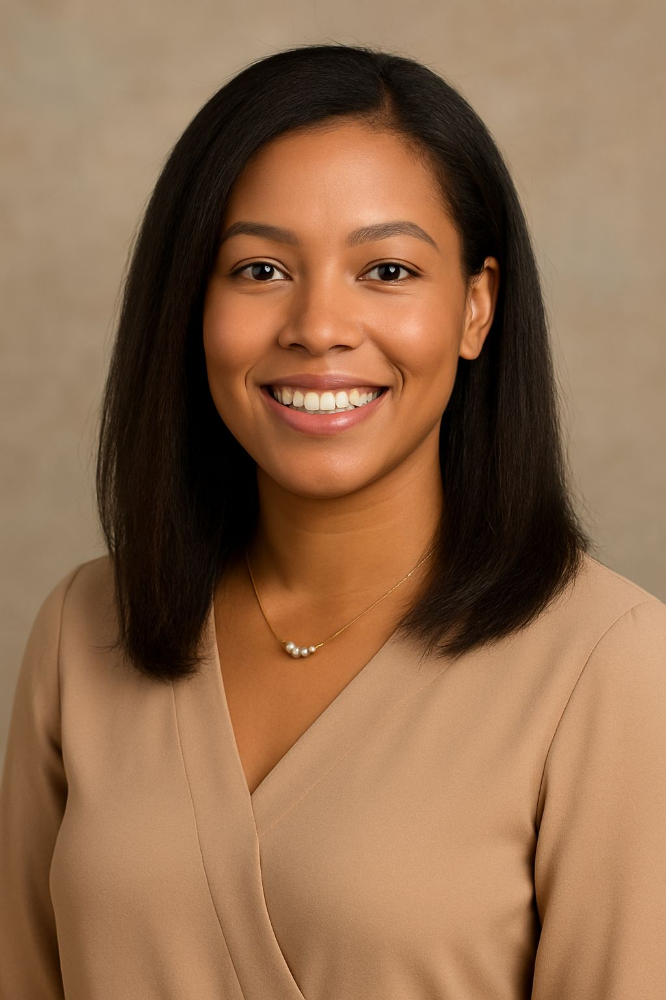
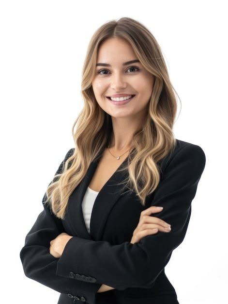

Our Story
Our Mission
Meet The Team
Behind every successful brand is a group of of people who believe in what they create and for us, that starts with healthy and radient skin

Malcom Meyer-CEO and Founder

Mirriam Sanders- Brand manager

Mbali Khwezi - Product developer

Sofia Carmen - Operations Manager

Neolla Rodriguez- Finance
Our socials
TICTOCK : @The Ordinary
INSTAGRAM : @ The Ordinary_Skin
GOOGLE : The Ordinary skincare